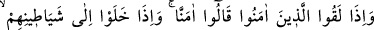
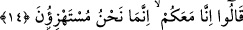

tanımayan kimse İbrâhîm dîninden yüz çevirir.” (el-Bakara, 2/130) Çünkü: “Nefsini
bilen Rabbini bilir” Rabbini bilen ise O’ndan başka her şeyi terkeder. Allah ehlini ve
O’nun has kullarını tanır, asla onlardan uzak durmaz ve onları beyinsizlikle suçlamaz.
Onlara izzetli kimseler nazarıyla bakar. Zira değerleri yüce, fakir kimseler, eski abalara
bürünmüş sultânlara benzerler. Onların yüzleri Allah katında güneş ve ay gibi parıldar.
Ama Allah’ın kubbeleri altında gizli ve başkalarının gözlerinden saklıdırlar.
Mesnevî’de şöyle denmiştir:
Temiz insanların sevgisini canının ortasına koy,
Gönlü temiz olanlardan başkasına gönül verme!
Değilse katı ve taş gibi, mermer gibi olursun.
Gönül sâhibi kimseler mücevher gibi makbûldür.
Allah’ın kubbeleri altında emniyettedirler.
Cenâb-ı Hakk’tan başkası onların durumlarını bilemez.
14. (Bu münâfıklar) mü’minlerle karşılaştıkları vakit “(Biz de) îmân ettik”
derler. (Kendilerini saptıran) şeytanları ile başbaşa kaldıklarında ise: Biz sizinle
beraberiz, biz onlarla (mü’minlerle) sadece alay ediyoruz, derler.
Bu âyet, münâfıkların mü’minlere ve kâfirlere karşı nasıl davrandıklarını ve onların
nifâklarını açıklamaktadır. Yoksa önceki âyetlerin bir tekrârı değildir. Yâni zikri geçen
bu münâfıklar, muhâcirler ve ensârdan mü’min kimselerle karşılaştıklarında yalan
söyleyerek “biz de sizin gibi inandık ve sizin gibi tasdîk ettik” derler.
Rivâyet olunduğuna göre bir gün münâfıkların başı olan Abdullah ibn Übeyy ve
arkadaşları bir gurup sahâbe ile karşılaştı. Abdullah ibn Übeyy arkadaşlarına: “Bakınız,
şimdi bu beyinsizleri sizden nasıl savuşturacağım” dedi. Onlara yaklaştıklarında Ebû
Bekir (r.a.)’ın elini tutarak: “Ey Temîmoğulları’nın efendisi, İslâm’ın büyüğü, hicret
sırasında Sevr mağarasında Rasûlullah (s.a.) ile beraber bulunan, canını ve malını onun
yolunda harcayan sıddîk, merhabâ!” dedi. Sonra Hz. Ömer (r.a.)’ın elini tutarak “Ey
Adiyy oğullarının efendisi, hakkı bâtıldan ayıran, dinde kuvvetli, canını ve malını
Rasûlullah yolunda bezleden merhabâ!” dedi. Daha sonra da Hz. Ali (r.a.)’ın elini
tutarak “Ey Rasûlullah’ın amcasının oğlu, dâmâdı ve Haşimoğulları’nın Rasûlullah’dan
sonraki efendisi merhabâ!” dedi. Bunun üzerine Hz. Ali (r.a.): “Ey Abdullah, Allah’dan
kork ve münâfıklık etme! Şüphesiz münâfıklar Allah’ın en şerli yaratıklarıdır.” deyince
Abdullah b. Übeyy: “Ey Hasan’ın babası ağır ol, bunu nasıl söylersin? Vallahi bizim
îmânımız ve tasdîkimiz sizin îmânınız ve tasdîkiniz gibidir.” dedi. Ashâb-ı kirâm
(r.a.)’dan ayrılınca arkadaşlarına: “Onlara nasıl davrandığımı gördünüz mü? İşte siz de